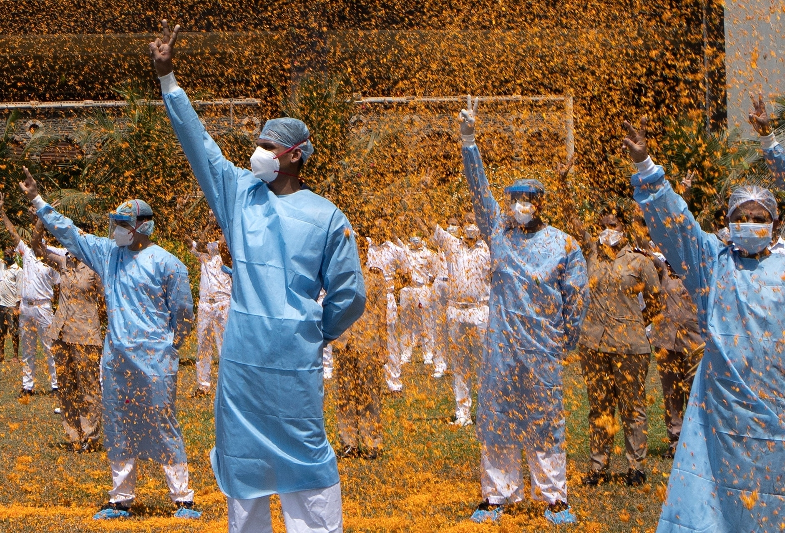

How is India’s second wave of Covid-19 different from the first
The infections are spreading faster but whether the disease is more
severe among the young is hard to say in the absence of data
With a massive second wave of Covid-19 sweeping through India, one
in five infections in the world is currently being reported from the
country.
In these torrid times, our doctors have been serving day and night, like the soldiers who guard our borders, to protect millions of lives. From being witnesses to so many deaths around them to working tirelessly without a break to getting themselves self-quarantined due to the fear of taking the virus home, the doctors were driven to the breaking point many a times during the pandemic. It has been an emotionally and physically exhausting journey for doctors – both at the personal and professional level.
Today, more than 2.75 million have lost the battle against this disease. On the anniversary of the lockdown, SocialStory remembers some of these fallen heroes, and we pay our respects to all those who’ve fought hard.
Doctors and healthcare workers who are responding to a global health crisis—trying to protect individuals, families and communities in adverse situations with stretched resources, shortage of personal protective equipment (PPE) and other equipment’s—have found themselves as unexpected targets in the fight against COVID-19.
According to the the research of Times of India and The Indian express now, the total number of frontline health workers died during the second wave time is estimated nearly 738 to 747. And also, they have uploaded the article in their page regarding research.
Without the work and dedication of the frontline health wrokers it is almost difficult to wipe out the challenges what the society had currently. So, Thank you very much for your work and humbleness towards the society.